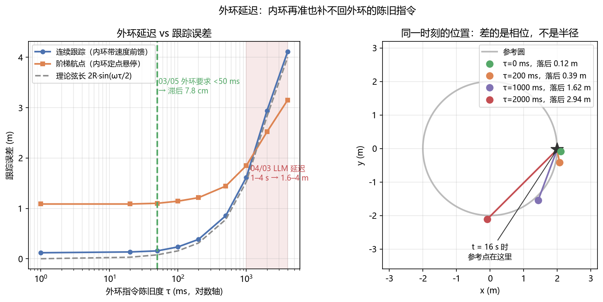

机载部署与优化：让 VLA 在无人机上实时运行¶
预计阅读：30 分钟 | 前置知识：深度学习推理基础、嵌入式系统概念、模型优化技术
1. 从研究到部署的鸿沟¶
核心差距在算力和内存两端：
| 维度 | 研究环境 | 无人机机载环境 |
|---|---|---|
| 计算资源 | 多张高端 GPU (A100/H100) | 嵌入式 GPU (Jetson Orin) 或 NPU |
| 内存 | 64-256 GB | 8-32 GB |
| 功耗 | 数百瓦 | 15-60 W（含计算+飞行） |
| 推理频率 | 1-10 Hz 可接受 | 与控制环是两个尺度，见下 |
| 延迟容忍 | 秒级 | 毫秒级 |
| 模型大小 | 数十 GB | 数百 MB - 数 GB |
「推理频率」这一行怎么读：控制频率不给统一数值，要区分两个量：飞控内环跑 IMU→电机的频率（各平台差异很大，本节不给统一数值），和策略推理频率（VLA-AN 自报约 494 ms 一次，即 2 Hz 量级）。两者差两三个数量级，硬凑成一个区间就会误导。
以 OpenVLA (7B) 为例：论文自报在单张 NVIDIA RTX 4090 GPU 上约 6 Hz（"runs at approximately 6Hz on one NVIDIA RTX 4090 GPU"）。论文没有在 Jetson / Orin 这类嵌入平台上测过，所以在机载平台上会慢到什么程度，属于外推而不是实测——做预算时不能把外推值当实测值用。
2. 机载计算平台概览¶
2.1 常用平台对比¶
| 平台 | 算力 (TOPS) | GPU 内存 | 功耗 (W) | 适用场景 |
|---|---|---|---|---|
| NVIDIA Jetson Orin NX 16GB | 100 | 16GB 共享 | 25 | 轻量级 VLA 推理 |
| NVIDIA Jetson AGX Orin 64GB | 275 | 64GB 共享 | 60 | 中等规模 VLA 推理 |
| Qualcomm RB5 | 15 | 无独立 GPU | 5 | 轻量级视觉任务 |
| Intel Movidius (NCS2) | 4 | 无 | 2 | 专用推理加速 |
| Google Coral (Edge TPU) | 4 | 无 | 2 | 量化模型推理 |
| 自研 NPU (如地平线旭日) | 5-30 | 集成 | 5-15 | 定制化推理 |
2.2 平台选择决策树¶
graph TB
A["选择机载计算平台"] --> B{"模型规模?"}
B -->|"< 1B 参数"| C["Jetson Orin NX"]
B -->|"1-7B 参数"| D["Jetson AGX Orin"]
B -->|"> 7B 参数"| E{"是否需要实时?"}
E -->|"是"| F["边缘-云协同"]
E -->|"否"| G["压缩后使用 AGX Orin"]
C --> C1["量化 + TensorRT"]
D --> D1["量化 + TensorRT"]
F --> F1["机载轻量模型 + 云端大模型"]
G --> G1["量化 + 剪枝 + 蒸馏"]
style F fill:#ffcc993. 推理加速技术¶
3.1 概览¶
VLA 模型的推理加速技术可以分为以下几个层次：
| 技术层次 | 技术手段 | 加速比 | 精度损失 | 实现难度 |
|---|---|---|---|---|
| 量化 | FP16/INT8/INT4 | 2-4× | 低-中 | 低 |
| 剪枝 | 结构化/非结构化 | 1.5-3× | 低-中 | 中 |
| 蒸馏 | 知识蒸馏 | 2-10× | 中 | 高 |
| 编译优化 | TensorRT/TVM | 1.5-3× | 无 | 低 |
| 架构优化 | 注意力优化/FlashAttention | 1.5-2× | 无 | 中 |
| 稀疏推理 | 稀疏注意力/条件计算 | 2-4× | 低 | 高 |
3.2 量化（Quantization）¶
量化是将模型权重和激活值从高精度浮点数（FP32/FP16）转换为低精度整数（INT8/INT4）的技术。
量化过程：
原始模型 (FP32):
权重: [0.123456, -0.789012, 0.456789, ...]
每个值占 4 字节
INT8 量化:
量化公式: q = round(w / scale + zero_point)
scale = (max - min) / 255
权重: [32, -201, 117, ...]
每个值占 1 字节
INT4 量化:
量化公式: q = round(w / scale + zero_point)
scale = (max - min) / 15
权重: [2, -8, 5, ...]
每个值占 0.5 字节
量化对 VLA 的影响：
| 量化精度 | 模型大小 | 推理速度 | 任务成功率 | 推荐场景 |
|---|---|---|---|---|
| FP32 (原始) | 28 GB (7B) | 1× | 100% (基准) | 研究环境 |
| FP16 | 14 GB | 1.5-2× | ~99.9% | 有大显存的平台 |
| INT8 | 7 GB | 2-3× | ~98-99% | Jetson AGX Orin |
| INT4 | 3.5 GB | 3-4× | ~95-97% | Jetson Orin NX |
| INT4 + GPTQ | 3.5 GB | 3-5× | ~96-98% | 极致压缩 |
注意事项： - VLA 的视觉编码器（如 ViT）对量化更敏感，建议使用混合精度（视觉编码器 FP16，语言模型 INT8） - 动作生成部分的量化需要特别注意，因为动作精度直接影响控制质量 - 建议使用校准数据集（calibration dataset）进行量化感知训练
3.3 剪枝（Pruning）¶
剪枝是移除模型中冗余参数的技术。对于 VLA 模型，结构化剪枝（移除整个注意力头或层）比非结构化剪枝更适合硬件加速。
graph LR
subgraph "非结构化剪枝"
A1["原始权重矩阵"] --> A2["稀疏权重矩阵"]
A2 --> A3["需要专用稀疏硬件"]
end
subgraph "结构化剪枝"
B1["原始模型"] --> B2["移除不重要的层/头"]
B2 --> B3["标准硬件可加速"]
end3.4 知识蒸馏（Knowledge Distillation）¶
知识蒸馏是将大模型（教师模型）的知识迁移到小模型（学生模型）的技术。对于 VLA，可以蒸馏的部分包括：
- 视觉特征蒸馏：教师模型的视觉编码器输出 → 学生模型的视觉编码器
- 语言理解蒸馏：教师模型的语言理解能力 → 学生模型
- 动作预测蒸馏：教师模型的动作输出 → 学生模型的动作头
蒸馏训练损失：
L_total = α × L_task + β × L_KD + γ × L_feat
其中：
L_task = 学生模型的任务损失（模仿学习）
L_KD = KL 散度损失（学生输出匹配教师输出）
L_feat = 特征匹配损失（中间层特征对齐）
3.5 TensorRT 编译优化¶
TensorRT 是 NVIDIA 提供的推理优化工具，可以自动进行多种优化：
| 优化技术 | 说明 | 加速效果 |
|---|---|---|
| 层融合 | 合并相邻的计算层 | 减少内存访问和 kernel 启动开销 |
| 内核自动调优 | 为每个层选择最优的 CUDA kernel | 提升计算效率 |
| 动态 batching | 动态批处理多个请求 | 提升吞吐量 |
| 图优化 | 优化计算图结构 | 减少冗余计算 |
| 精度校准 | 自动选择最优精度 | 平衡速度和精度 |
VLA-AN 的推理优化
| 模型 | 原始推理时间 | 优化后 | 加速比 |
|---|---|---|---|
| VLA-AN | 约 4100 ms | 494 ms | 8.3×（减少 87.9%） |
口径提示：8.3× 是论文里唯一有绝对数值对照的指标，衡量的是整条推理链路，不是某一块 kernel。端到端整环还要叠上图像采集、预处理与安全层后处理，仍追不上实时控制的更高档位 —— 见 研究空白与机会 2.1 节。第 10 节另量过外环延迟收进闭环的代价：外环慢到 1 秒，跟踪误差就是 1.62 m。拿这张表做实时性预算时，要按整环算，不要只盯着 494 ms。
4. 边缘-云协同架构¶
4.1 动机¶
当模型过大无法完全在机载平台上运行时，边缘-云协同（Edge-Cloud Collaboration）是一种有效的解决方案。CoDrone 框架就是这种架构的典型代表。
4.2 协同模式¶
graph TB
subgraph "模式一：云端推理"
A1["机载采集图像"] --> A2["传输到云端"]
A2 --> A3["云端 VLA 推理"]
A3 --> A4["返回动作指令"]
A4 --> A5["机载执行"]
A6["优点: 可用最大模型"] -.-> A7["缺点: 延迟大, 依赖网络"]
end
subgraph "模式二：边缘推理"
B1["机载采集图像"] --> B2["边缘服务器推理"]
B2 --> B3["返回动作指令"]
B3 --> B4["机载执行"]
B5["优点: 延迟较小"] -.-> B6["缺点: 需要边缘基础设施"]
end
subgraph "模式三：混合推理"
C1["机载: 轻量感知模型"] --> C2["边缘: 中等规划模型"]
C2 --> C3["云端: 大型推理模型"]
C3 --> C4["结果回传执行"]
C5["优点: 分层优化"] -.-> C6["缺点: 架构复杂"]
end4.3 通信约束¶
边缘-云协同的一个关键挑战是通信约束：
| 约束 | 典型值 | 影响 |
|---|---|---|
| 带宽 | 10-100 Mbps (4G/5G) | 限制图像传输频率 |
| 延迟 | 20-200 ms (取决于距离) | 限制实时性 |
| 可靠性 | 可能断连 | 需要断网降级策略 |
| 功耗 | 通信模块消耗 2-5 W | 影响飞行时间 |
4.4 通信优化策略¶
策略一：选择性传输
- 只在场景变化显著时传输图像
- 使用图像差异检测判断是否需要更新
- 预期减少 50-80% 的通信量
策略二：渐进式传输
- 先传输低分辨率图像获取粗略结果
- 再传输高分辨率图像获取精确结果
- 预期减少 30-50% 的延迟
策略三：预测性传输
- 预测未来可能需要的场景
- 提前传输相关数据
- 减少等待时间
策略四：断网降级
- 通信中断时切换到机载轻量模型
- 维持基本的飞行安全能力
- 恢复通信后自动同步
5. 安全约束机制¶
5.1 VLA 的安全性问题¶
VLA 模型作为数据驱动的学习系统，缺乏传统控制理论中的形式化安全保证。在无人机场景中，这尤为危险：
| 安全风险 | 说明 | 后果 |
|---|---|---|
| 幻觉输出 | 模型生成不合理的动作 | 碰撞、坠机 |
| 分布偏移 | 部署场景与训练分布不同 | 行为异常 |
| 对抗攻击 | 恶意输入欺骗模型 | 失去控制 |
| 累积误差 | 长时间任务中误差累积 | 偏离航线 |
5.2 VLA-AN 的几何安全校正¶
VLA-AN 的几何安全校正（GSC）是一种轻量级的安全后处理机制：
GSC 实现流程：
输入: VLA 原始动作 a_raw = (vx, vy, vz, ωz)
最近障碍物信息: (距离 d_obs, 法向量 n_obs)
步骤 1: 安全状态判断
if d_obs > d_safe:
return a_raw # 安全，直接执行
步骤 2: 危险分量计算
v_approach = dot(a_velocity, n_obs) # 靠近障碍物的速度分量
步骤 3: 安全校正
if v_approach > 0: # 正在靠近障碍物
a_safe = a_raw - v_approach * n_obs * correction_factor
else:
a_safe = a_raw # 正在远离，无需校正
步骤 4: 输出限幅
a_safe = clip(a_safe, a_min, a_max)
输出: a_safe
5.3 多层安全架构¶
实际部署中，通常采用多层安全架构：
graph TB
A["VLA 模型输出"] --> B["第一层: 输出合理性检查"]
B -->|"通过"| C["第二层: 几何安全校正 (GSC)"]
B -->|"异常"| F["使用安全默认动作"]
C --> D["第三层: 动力学可行性检查"]
D -->|"通过"| E["第四层: 地理围栏检查"]
D -->|"不可行"| G["约束投影到可行空间"]
E -->|"通过"| H["执行动作"]
E -->|"越界"| I["返回安全区域"]
F --> H
G --> E
I --> H各层说明：
| 层次 | 功能 | 延迟 | 说明 |
|---|---|---|---|
| 第一层 | 输出合理性检查 | < 0.1ms | 检查动作是否在合理范围内 |
| 第二层 | 几何安全校正 | < 0.5ms | 移除靠近障碍物的速度分量 |
| 第三层 | 动力学可行性 | < 0.2ms | 检查动作是否在动力学约束内 |
| 第四层 | 地理围栏 | < 0.1ms | 确保不飞出安全区域 |
总安全检查延迟 < 1ms，对控制频率影响极小。
5.4 安全监控模块¶
除了动作层面的安全检查，还需要运行时安全监控：
安全监控指标：
1. 姿态监控
- 倾斜角度 > 45° → 触发姿态恢复
- 角速度异常 → 触发紧急悬停
2. 高度监控
- 高度 < 最低安全高度 → 自动拉升
- 高度下降速度过大 → 触发紧急悬停
3. 电量监控
- 电量 < 30% → 触发返航
- 电量 < 15% → 触发紧急降落
4. 通信监控
- 通信中断 > 30s → 触发自主返航
- 信号强度持续下降 → 主动降低高度
5. 模型监控
- VLA 推理延迟 > 阈值 → 切换到安全模式
- VLA 输出置信度 < 阈值 → 使用保守策略
6. 实时性保障¶
6.1 流传的控制频率需求，没有测量支撑¶
工程上流传着一套"什么任务需要多少 Hz"的数字：
| 任务类型 | 流传的最低控制频率 | 流传的推荐频率 | VLA 推理频率需求 |
|---|---|---|---|
| 悬停 | 50 Hz | 100 Hz | 10–20 Hz |
| 航线飞行 | 20 Hz | 50 Hz | 5–10 Hz |
| 避障 | 50 Hz | 100 Hz | 20–50 Hz |
| 精准降落 | 100 Hz | 200 Hz | 20–50 Hz |
| 编队飞行 | 50 Hz | 100 Hz | 10–20 Hz |
| 跟踪 | 50 Hz | 100 Hz | 20–50 Hz |
这套数字的出处是惯例，不是测量。 本仓库 KH-6 的文献核验查过这一点：地面操作侧流传的"至少 10 Hz、20–30 Hz 理想"出自 ActionFlow 转引 Stremack 2024 与 Ashtiani 2021，另一篇 Reflex 写"manipulation requires 50–100 Hz"——两者都没有给出测量依据。有出处的反而是相反方向的一篇：Is Data All That Matters? The Role of Control Frequency for Learning-Based Sampled-Data Control of Uncertain Systems（arXiv:2403.09504，ACC 2024）用高斯过程加半定规划算出了四旋翼在采样数据控制下保证稳定所需的最小控制频率。
它的三条边界要说清：高斯过程而非神经策略、稳定性口径而非任务性能、零阶保持而非分块执行。所以它回答的不是本篇的问题，但它至少证明了这个数是可以算出来的，而不是只能抄。
更实用的建议是别抄这张表。 §6.5 给出替代方案：报有效动作年龄的分布，而不是一个 Hz。
6.2 分频控制架构¶
VLA 模型的推理频率（通常 1-20 Hz）远低于底层控制频率（50-200 Hz）。分频控制架构是解决这一矛盾的标准方案：
分频控制架构：
高频层 (100-200 Hz):
- PID 控制器 / MPC 控制器
- 接收 VLA 的速度/位置指令
- 输出电机 PWM 信号
- 延迟要求: < 5ms
中频层 (10-50 Hz):
- VLA 模型推理
- 接收视觉图像和语言指令
- 输出速度/位置指令
- 延迟要求: < 50ms
低频层 (1-5 Hz):
- 任务规划和监控
- 接收高层任务描述
- 输出任务状态和子目标
- 延迟要求: < 500ms
6.3 流水线优化¶
通过流水线化（pipelining）减少端到端延迟：
graph LR
subgraph "时间步 t"
A1["采集图像"] --> A2["VLA 推理"]
A2 --> A3["安全校正"]
A3 --> A4["控制执行"]
end
subgraph "时间步 t+1"
B1["采集图像"] --> B2["VLA 推理"]
B2 --> B3["安全校正"]
B3 --> B4["控制执行"]
end
A1 -.->|"同时"| B1通过流水线化，图像采集和 VLA 推理可以并行进行，减少每个时间步的总延迟。
6.4 预测性控制¶
当 VLA 推理延迟无法进一步降低时，可以使用预测性控制：
预测性控制策略：
1. VLA 生成未来 N 步的动作预测（action chunk）
2. 按顺序执行预测的动作
3. 每 M 步用最新的 VLA 推理结果更新
示例：
VLA 预测: [a₁, a₂, a₃, a₄, a₅, a₆, a₇, a₈]
执行: a₁, a₂, a₃, a₄ (使用缓存的预测)
更新: VLA 推理生成新的 [a₅', a₆', a₇', a₈', a₉', a₁₀', a₁₁', a₁₂']
执行: a₅', a₆', a₇', a₈' (使用新预测)
...
这种策略将 VLA 的推理频率降低到原来的 1/N，同时保持高频控制输出。
6.5 该报什么：动作年龄的下限，而不是均值¶
前面四小节是工程做法。这一小节是口径：验收一个机载部署方案时该看哪个数。
报告的执行率 f_exec 不是充分统计量。 KH-6 在 code/common/quad_sim.py 的四旋翼上跑了 126 个配置（推理时钟、推理延迟、执行率三维网格，网格点选在"还在跟踪"的区间内），各统计量与闭环 RMSE 的 Spearman 秩相关是：
| 统计量 | Spearman(RMSE) |
|---|---|
报告的执行率 f_exec |
−0.157 |
推理时钟 f_inf |
−0.592 |
推理延迟 Δ |
+0.512 |
| 实测平均动作年龄 | +0.830 |
系统报出来的那个 Hz 对闭环性能几乎没有预测力，实测动作年龄的预测力是它的五倍以上。同一张网格上还有一条更陡的曲线：固定 f_exec=50 Hz、Δ=0，把推理时钟从 5 Hz 降到 2 Hz，RMSE 从 0.0404 m 涨到 4.6671 m，两个数量级。
领域正在把 Hz 换成平均年龄，但这个替换不充分。 2026 年已有工作把"平均反应时间"写进主结果：FASTER（arXiv:2603.19199）把反应时间建模成 Δt_react ~ U(a,b) 并报期望 (a+b)/2；ChunkTrust（arXiv:2609.39754）直接报 observation age（4.92 s 降到 3.07 s）；πR²（arXiv:2607.26055）把"每 40 ms 一次新鲜观测"写进主结果。
KH-6 给出的是对这个做法的反例：在执行率相同、实测平均年龄也相同（容差半个仿真步）的配对里，闭环跟踪精度中位差 1.46 倍、最大 11.76 倍，只有 37% 的配对落在 1.25 倍以内。方向是系统性的：
11.76× f_inf=20 Δ=80ms age= 90.0ms RMSE=0.2250 ‖ f_inf=7 Δ=20ms age=80.2ms RMSE=0.0191
8.84× f_inf=20 Δ=60ms age= 70.0ms RMSE=0.1501 ‖ f_inf=7 Δ= 0ms age=60.1ms RMSE=0.0170
7.29× f_inf=15 Δ=60ms age= 80.0ms RMSE=0.1396 ‖ f_inf=7 Δ=20ms age=80.2ms RMSE=0.0191
每一对里输的都是「推理频繁但观测陈旧」，赢的都是「推理稀疏但观测新鲜」。
机制在一行里：固定年龄时 age = Δ + T_inf/2 让 Δ 与 T_inf 一比一互换，所以"低推理频率赢"等价于"低延迟下限赢"。这造成一次辛普森式反转 —— 全局上 ρ(f_inf) = −0.592（推理越快越好），但在固定年龄下排序翻过来。
结论：平均年龄是个好的预测器，但不是充分统计量。决定闭环代价的是年龄的下限（等价地：是分布），不是它的均值。
这条结论的边界要一并说清：单一对象（quad_sim 四旋翼，无真机）、单一策略（BC + DAgger 小 MLP，全速基线 0.0453 m）、单一任务带宽（0.15 Hz 圆）；RMSE > 0.25 m 的发散区间（71/126 个配置）未用于判读。它是证伪性结论（"均值不充分"），比成立性结论稳健：新增配置只可能加强它。可判伪的判据也在同一处 —— 若在其它对象或任务上，"同年龄同执行率"配对的比值中位数落到 1.1 倍以内，这一条就死。
对机载部署的直接做法：验收时同时报三项 —— 推理延迟 Δ（它同时是动作年龄的下限）、实测动作年龄的 P50、以及年龄的 P99。只报一个 Hz 的方案，说明不了它能不能跟上控制回路。09 篇 第 7 节把这一条放进了报告口径。
7. 优化技术综合对比¶
| 技术 | 加速比 | 精度影响 | 实现复杂度 | 适用平台 | 推荐组合 |
|---|---|---|---|---|---|
| FP16 量化 | 1.5-2× | 极低 | 低 | 所有 NVIDIA GPU | 基础优化 |
| INT8 量化 | 2-3× | 低 | 中 | Jetson, 数据中心 GPU | 机载部署首选 |
| INT4 量化 | 3-4× | 中 | 高 | 支持 INT4 的平台 | 极致压缩 |
| 结构化剪枝 | 1.5-2× | 低-中 | 中 | 所有平台 | 配合量化使用 |
| 知识蒸馏 | 2-10× | 中 | 高 | 所有平台 | 需要小模型时 |
| TensorRT | 1.5-3× | 无 | 低 | NVIDIA GPU | 必选优化 |
| FlashAttention | 1.5-2× | 无 | 中 | 支持的 GPU | Transformer 优化 |
| 稀疏推理 | 2-4× | 低 | 高 | 支持稀疏计算的平台 | 前沿技术 |
推荐的优化组合方案：
方案一: 轻量级部署 (Jetson Orin NX)
FP16 + INT8 混合量化 + TensorRT
预期: 3-5× 加速, 精度损失 < 2%
方案二: 中等部署 (Jetson AGX Orin)
INT8 量化 + TensorRT + FlashAttention
预期: 4-6× 加速, 精度损失 < 3%
方案三: 极致压缩 (资源受限平台)
知识蒸馏 (7B → 1B) + INT8 量化 + TensorRT
预期: 10-20× 加速, 精度损失 5-10%
方案四: 边缘-云协同 (无算力限制)
机载: 轻量感知模型 (INT8)
边缘: 中等规划模型 (FP16)
云端: 大型推理模型 (FP32)
8. 部署架构示例¶
8.1 完整的机载部署架构¶
完整的无人机 VLA 部署架构：
[传感器层]
- 前置摄像头 (30-60 fps)
- 下视摄像头 (30 fps)
- IMU (200 Hz)
- 气压计 (50 Hz)
- 超声波高度计 (20 Hz)
|
[预处理层]
- 图像去畸变
- 图像缩放/裁剪
- 传感器数据同步
|
[VLA 推理层]
- 模型加载 (TensorRT 引擎)
- INT8/FP16 混合推理
- 动作 chunk 生成
|
[安全层]
- 输出合理性检查
- 几何安全校正 (GSC)
- 动力学可行性检查
- 地理围栏检查
|
[控制层]
- PID/MPC 控制器 (100-200 Hz)
- 位置/速度/姿态控制
- 电机混控
|
[执行层]
- 电调 (ESC)
- 电机
- 螺旋桨
|
[监控层]
- 电量监控
- 通信监控
- 姿态监控
- 日志记录
8.2 边缘-云协同部署架构¶
边缘-云协同部署架构：
[无人机端]
轻量感知模型 (INT8, ~100ms)
- 视觉特征提取
- 简单动作生成
- 安全监控
|
[通信链路] (4G/5G, 延迟 20-100ms)
|
[边缘服务器]
中等规划模型 (FP16, ~200ms)
- 场景理解
- 路径规划
- 目标管理
|
[通信链路] (光纤/专线, 延迟 5-20ms)
|
[云端服务器]
大型推理模型 (FP32, ~500ms)
- 复杂任务推理
- 多机调度
- 知识更新
9. 关键论文¶
-
[arXiv'25.12] VLA-AN — VLA-AN: An Efficient and Onboard Vision-Language-Action Framework for Aerial Navigation in Complex Environments
 GSC 安全校正, 8.3× 加速
GSC 安全校正, 8.3× 加速 -
[arXiv'25.12] CoDrone — CoDrone: Autonomous Drone Navigation Assisted by Edge and Cloud Foundation Models
 云边端协同框架
云边端协同框架 -
[Tool] TensorRT
 NVIDIA 推理优化工具
NVIDIA 推理优化工具 -
[arXiv'22.10] GPTQ — GPTQ: Accurate Post-Training Quantization for Generative Pre-trained Transformers
 INT4 量化方法
INT4 量化方法 -
[arXiv'22.05] FlashAttention — FlashAttention: Fast and Memory-Efficient Exact Attention with IO-Awareness
 高效注意力机制
高效注意力机制 -
[arXiv'24.03] Is Data All That Matters? The Role of Control Frequency for Learning-Based Sampled-Data Control of Uncertain Systems
 算出四旋翼稳定所需最小控制频率
算出四旋翼稳定所需最小控制频率 -
[arXiv'26.03] FASTER — FASTER: Rethinking Real-Time Flow VLAs
 反应时间建模为均匀分布并报期望
反应时间建模为均匀分布并报期望 -
[arXiv'26.09] ChunkTrust — ChunkTrust: Adapting Execution Horizons for Robot Policies with Action-Expert Evidence
 直接报 observation age
直接报 observation age -
[arXiv'26.07] $π\mathbf{R}^2$: Reactive Real-time Flow Policies
 把"每 40 ms 一次新鲜观测"写进主结果
把"每 40 ms 一次新鲜观测"写进主结果 -
[arXiv'26.10] Measuring the Stability Assumption Behind Action Chunking
 稳定性假设只在收缩态成立
稳定性假设只在收缩态成立 -
[arXiv'26.10] RealtimeWAM — RealtimeWAM: How Fast Can I Run My World Action Model?
 把推理速度当成评测问题
把推理速度当成评测问题 -
[arXiv'26.10] CARE — CARE: Certifying Acceleration for Vision-Language-Action Inference
 把加速做成可证明的
把加速做成可证明的
10. 动手验证：外环延迟 1 秒，无人机跑偏多少？¶
6.2 节的分频控制架构给三层的延迟要求分别开了 5 ms、50 ms、500 ms 三个数字，但没说这三个数字是怎么定下来的。这一节把外环延迟收进闭环里量出来。
做法是内环固定 50 Hz 正常跑，只让外环下发的目标点变陈旧，从 0 ms 一路加到 4000 ms。参考轨迹是一条半径 2 m 的圆，8 秒一圈。外环频率 f 与陈旧度 τ 是同一件事的两种说法，换算关系是 τ = 1/(2f)：外环 10 Hz 对应 τ = 50 ms。
10.1 参考轨迹与跟踪控制器¶
import torch, math
from common.quad_sim import QuadSim
N, T, DT = 64, 800, 0.02 # 64 架并行；800 步 = 16 秒；内环 50 Hz
R, LAP, H = 2.0, 8.0, 1.5 # 参考圆半径 / 一圈秒数 / 巡航高度
OM = 2 * math.pi / LAP
TAUS = [0, 50, 100, 500, 1000, 4000] # 外环指令陈旧度 (ms)
def ref(t, ph): # 参考位置，(N,3)；t 可为负，陈旧目标要回看过去
a = OM * t + ph
return torch.stack([R * torch.cos(a), R * torch.sin(a), torch.full_like(a, H)], -1)
def ref_v(t, ph): # 参考速度，(N,3)，对 ref 求导；z 分量必须补 0
a = OM * t + ph
return torch.stack([-R * OM * torch.sin(a), R * OM * torch.cos(a), torch.zeros_like(a)], -1)
def track(env, p_ref, v_ref, kp=0.9, kd=0.7, ka=3.0, tm=0.6):
"""与 quad_sim.expert() 的唯一差别：D 项比较速度误差 v - v_ref，而不是绝对速度。"""
e = p_ref[:, :2] - env.p[:, :2]
dv = env.v[:, :2] - v_ref[:, :2]
tilt = torch.stack([torch.clamp(kp * e[:, 0] - kd * dv[:, 0], -tm, tm),
torch.clamp(kp * e[:, 1] - kd * dv[:, 1], -tm, tm)], -1)
a = torch.zeros(env.n, 4)
a[:, 0] = 0.5 + 0.10 * (H - env.p[:, 2]) - 0.30 * env.v[:, 2]
a[:, 1:3] = ka * (tilt - env.rpy[:, :2])
return a.clamp(-1, 1)
torch.manual_seed(0)
ph = 2 * math.pi * torch.arange(N) / N # 均匀铺在圆周上
for tau in TAUS:
k = round(tau / 1000 / DT)
env = QuadSim(N); env.reset()
env.p = ref(0.0, ph).clone(); env.v = ref_v(0.0, ph).clone()
err = 0.0
for t in range(T):
ts = DT * (t - k) # <- 外环：下发的永远是 k 步前的点
env.step(track(env, ref(ts, ph), ref_v(ts, ph)))
if t >= 200: # 前 4 秒放掉起飞瞬态
err += float(((env.p[:, :2] - ref(DT * t, ph)[:, :2]).norm(dim=-1) ** 2).sum())
print(f"τ={tau:>4} ms 跟踪 RMSE {math.sqrt(err / ((T - 200) * N)):.2f} m")
track 与 quad_sim.expert() 只差一处：D 项比较的是速度误差 v - v_ref 而不是绝对速度。定点悬停时两者等价，参考点一动就不同了——expert 的速度反馈会产生一个反向倾角把无人机拽停，实测在 τ=0 时跟踪误差就有 1.86 m，几乎停在圆心。跟踪移动参考点必须加参考速度前馈。
10.2 本地实测结果¶
τ= 0 ms 跟踪 RMSE 0.12 m
τ= 50 ms 跟踪 RMSE 0.16 m
τ= 100 ms 跟踪 RMSE 0.24 m
τ= 500 ms 跟踪 RMSE 0.85 m
τ=1000 ms 跟踪 RMSE 1.62 m
τ=4000 ms 跟踪 RMSE 4.11 m
τ=50 ms 时误差 16 cm，和 τ=0 的 12 cm 基准同量级；τ=1 s 时升到 1.62 m，τ=4 s 时 4.11 m，已经是圆的直径（4 m），无人机跑到了参考点的正对面。
误差是可以解析预测的。参考点在 τ 时间内在圆上转过的角度是 ωτ，弦长 2R·sin(ωτ/2) 就是无人机与参考点的距离。实测值与这个理论弦长之比在 τ ≥ 500 ms 时是 1.10 / 1.06 / 1.04 / 1.03，接近 1，说明内环几乎完美地执行了陈旧指令——误差全部来自外环的相位滞后，跟内环的控制器质量无关。这也是为什么加大内环增益救不回来：它执行得越准，越是准确地飞向一个过时的目标。
图上还有第二条曲线（橙色）。它换了一种外环设计：不下发连续轨迹，而是每隔 τ 秒给一个离散航点，内环只做定点悬停。这条曲线的基准就高得多（τ=0 时也有 1.09 m），但随延迟的增长平缓得多（4 s 时 3.15 m）。两种外环设计的取舍在 LLM 驱动的无人机 Agent 那一节展开，本节关注的是上层的分频架构。
两个口径：这里量的是跟踪误差，不是撞不撞。参考圆是周期轨迹，τ 等于整圈时长（8000 ms）时旧目标会绕回原位、误差假性归零，本节的 τ 最大 4000 ms（半圈）正好在单调区间内。换成非周期轨迹就没有这个别名问题，但误差的量级不变。

10.3 【待验证】接入 PX4 SITL：陈旧指令要在哪一层补回来¶
未在本地验证：本节代码需要 Ubuntu + PX4 + MicroXRCEAgent 才能运行，本仓库的验证环境是 Windows，没有跑过。字段名请以你安装的
px4_msgs版本为准。
知道了误差是相位滞后，就有两条标准的补救路线：让外环更快（做不到，模型就那么大），或者在两次外环更新之间做插值。6.4 节的动作分块属于后者：外环每 τ 秒给一个目标，内环在这两个目标之间线性插值，等效陈旧度从 τ 降到 τ/2。
from rclpy.qos import QoSProfile, ReliabilityPolicy, DurabilityPolicy, HistoryPolicy
from px4_msgs.msg import OffboardControlMode, TrajectorySetpoint, VehicleLocalPosition
def px4_qos(depth=1):
"""PX4 话题统一用 BEST_EFFORT + TRANSIENT_LOCAL，否则收不到数据。"""
return QoSProfile(reliability=ReliabilityPolicy.BEST_EFFORT,
durability=DurabilityPolicy.TRANSIENT_LOCAL,
history=HistoryPolicy.KEEP_LAST, depth=depth)
class InterpolatingOuterLoop(Node):
"""外环慢，内环在两个外环目标之间插值：等效陈旧度降到 τ/2。"""
def __init__(self):
super().__init__('outer_loop')
self.prev, self.next, self.t_next = None, None, 0.0
self.create_subscription(VehicleLocalPosition, '/fmu/out/vehicle_local_position',
self.on_pos, px4_qos())
def on_pos(self, m):
now = m.timestamp / 1e6
if self.next is None or now >= self.t_next: # 外环更新（慢，比如 1 Hz）
self.prev, self.next = self.next, self.vla_target()
self.t_next = now + self.period
if self.prev is None:
return # 第一帧没有可插值的起点
w = min(max((now - (self.t_next - self.period)) / self.period, 0.0), 1.0)
# 插值必须在收到新目标后立刻做，晚一拍就等于把省下的延迟又还回去
sp = self.prev * (1 - w) + self.next * w
self.pub_setpoint.publish(to_enu_setpoint(sp))
另外两点：插值只在目标变化平滑时成立，LLM 那种跳变的目标（"改去 B 楼"）插出来会是一条穿过障碍的直线，必须配一个重规划检查；陈旧度要可观测，把外环目标的年龄打进日志，否则你只能看到跟踪变差，不知道是模型变笨还是消息堵在队列里。
10.4 运行完整脚本¶
完整脚本（含 9 个 τ 档位、理论弦长对照、出图）：code/f_control_loop.py
11. 动手验证：推理的账里，有两项根本不存在¶
第 3.2 节那张精度-显存表给了四个数：FP32 28 GB、FP16 14 GB、INT8 7 GB、INT4 3.5 GB。这四个数逐格都是对的，但表头写的是"模型大小"——它只算了权重那一项。机载部署真正要问的是：这 14 GB 之外还要留多少？
显存一共四笔账：权重 / 梯度 / 优化器状态 / 激活。推理时中间两笔根本不存在 —— 不反向就没有梯度，没有梯度就没有 Adam 的两份动量。这就是同一句"7B 模型"在训练和推理下能差好几倍的全部原因。剩下能变的只有权重精度、KV cache 和激活。
11.1 把 KV cache 加进那张表¶
GB = 2 ** 30
P, LAYERS, D, BYTES = 7.0e9, 32, 4096, 2 # LLaMA-2 7B
def kv_gb(ctx):
"""KV cache：K 与 V 各一份，每层每 token 是 2 x d_model x 2 字节。"""
return 2 * LAYERS * ctx * D * BYTES / GB
print("精度 权重 KV@2048 KV@8192 2048 合计 8192 合计 16G 板余量@2048")
for bits, name in ((32, "FP32"), (16, "FP16"), (8, "INT8"), (4, "INT4")):
w = P * bits / 8 / GB
t2, t8 = w + kv_gb(2048), w + kv_gb(8192)
print(f"{name:<6} {w:>7.1f}G {kv_gb(2048):>8.1f}G {kv_gb(8192):>8.1f}G "
f"{t2:>11.1f}G {t8:>10.1f}G {16 - t2:>15.1f}G")
print(f"\n按十进制 GB 写，同样的权重是 {P*4/1e9:.0f} / {P*2/1e9:.0f} / "
f"{P/1e9:.0f} / {P/2/1e9:.1f} GB —— 和文档那张表逐格对上")
11.2 本地实测结果¶
精度 权重 KV@2048 KV@8192 2048 合计 8192 合计 16G 板余量@2048
FP32 26.1G 1.0G 4.0G 27.1G 30.1G -11.1G
FP16 13.0G 1.0G 4.0G 14.0G 17.0G 2.0G
INT8 6.5G 1.0G 4.0G 7.5G 10.5G 8.5G
INT4 3.3G 1.0G 4.0G 4.3G 7.3G 11.7G
按十进制 GB 写，同样的权重是 28 / 14 / 7 / 3.5 GB —— 和文档那张表逐格对上
第一，那张表逐格都对，前提是按十进制 GB 算。 28 / 14 / 7 / 3.5 是 7e9 × 4 / 2 / 1 / 0.5 字节的十进制结果。换成 nvidia-smi 和 tegrastats 用的 GiB，同一份权重要写成 26.1 / 13.0 / 6.5 / 3.3 —— 差了 7%。在 16 GB 的板子上，7% 就是 1 GB，够放一段 2048 token 的 KV cache 了。
第二，KV cache 是这张表没写、但机载上躲不掉的一项。 它是 K 和 V 各一份 × 层数 × token 数 × d_model × 2 字节，换算成 0.50 MB/token，和权重精度无关（权重降到 INT4，KV cache 默认仍是 fp16）。2048 token 的上下文要 1.0 GB，8192 token 要 4.0 GB —— 在 16 GB 的板上是 6% 到 25%。
第三，两笔加起来看，FP16 在 16 GB 板上只剩 2 GB 余量。 而 Jetson Orin 系列的 16 GB 是和 CPU 共享的（第 2 节表格里"16GB 共享"那一列写的就是这件事），操作系统、ROS 节点、相机缓冲都在同一块内存里分。所以第 3.2 节把 FP16 标成"有大显存的平台"、把 INT8 标给 AGX Orin、INT4 标给 Orin NX，这个映射是站得住的：FP16 的 14.0 GB 在名义上装得进 16 GB，实际上装不进那块共享的 16 GB。 INT8 的 7.5 GB 和 INT4 的 4.3 GB 才留得下余量。
限制：这里只算权重和 KV cache，不含推理时的激活（前向不留反向图，只有当前层的中间结果，通常远小于权重），也不含框架自身的显存池、CUDA context 和碎片。机载上还要看带宽：Orin 系列的显存和 CPU 共享同一条总线，权重越大量化收益越不只在容量上。KV cache 按 fp16 算，实际框架支持 KV cache 也量化，那样这两列会小一半。

11.3 运行完整脚本¶
12. 延伸阅读¶
- 01-VLA架构演进 — 了解不同 VLA 架构的计算需求差异
- 02-无人机VLA模型 — VLA-AN 的安全校正和推理加速细节
- 04-基础模型辅助规划 — CoDrone 的云边端架构详细设计
- 06-动作头与动作分块 — §6.4 那套"预测未来 N 步再按 M 步更新"的分块机制，那篇把它当自变量扫
- 09-评测基准与报告口径 — §6.5 这条口径进入报告规范后的样子
- 10-世界模型增强VLA — 部署时要不要把世界模型放进推理回路，那篇第 6 节算这笔账
- 08-研究前沿与开放问题/02-研究空白与机会 — VLA 实时化等开放问题
- 02-世界模型专题/01-世界模型发展史 — 轻量级世界模型的机载部署方案
13. 思考题¶
题目 1：量化精度 vs. 控制安全
INT4 量化可以将模型大小压缩到原来的 1/8，但会引入量化误差。在无人机控制场景中，如何评估量化误差对飞行安全的影响？
参考答案
**评估框架：** 1. **离线评估**： - 在测试集上比较量化前后的动作预测误差（MSE、MAE） - 统计量化后动作超出安全范围的频率 - 分析量化误差在不同场景（简单/复杂）下的分布 2. **仿真评估**： - 在仿真环境中用量化模型控制无人机，统计碰撞率和任务完成率 - 对比不同量化精度下的安全指标 - 测试边缘情况（紧急避障、强风扰动等） 3. **安全裕度分析**： - 量化误差导致的动作偏差 Δa - 安全校正模块的校正能力 C - 安全条件：Δa < C（量化误差在安全校正能力范围内） 4. **建议策略**： - 关键安全模块（如动作输出层）保持较高精度（FP16/INT8） - 非关键模块（如中间特征层）可以使用 INT4 - 使用混合精度量化，敏感层高精度，非敏感层低精度 - 增加安全校正模块的校正裕度，补偿量化误差题目 2：边缘-云协同的断网处理
在边缘-云协同架构中，如果无人机与边缘服务器的通信突然中断，系统应如何处理？请设计一个断网降级方案。
参考答案
**断网降级方案：** **检测阶段（0-1s）：** - 通信监控模块检测到连接中断 - 立即记录当前任务状态和位置 - 通知控制层切换到本地模式 **降级阶段（1-30s）：** - 切换到机载轻量模型（已经预加载在内存中） - 降低飞行速度到安全水平 - 启用更保守的安全策略（增大安全距离） - 执行简化版任务（如悬停或缓慢返航） **自主阶段（30s-5min）：** - 如果电量充足且任务允许，继续执行简化版任务 - 如果电量不足或环境复杂，启动自主返航程序 - 使用机载 SLAM 进行本地定位 - 记录飞行轨迹，供恢复通信后同步 **紧急阶段（> 5min 或电量 < 20%）：** - 启动紧急降落程序 - 选择最近的安全降落点 - 降落完成后等待人工干预 **恢复阶段（通信恢复后）：** - 同步断网期间的飞行数据 - 评估当前任务状态 - 决定是继续任务还是返回起点题目 3：实时性与模型能力的权衡
假设你有一个 7B 参数的 VLA 模型，推理延迟 200ms（5 Hz），但你的无人机需要 100 Hz 的控制频率。请设计一个完整的方案来平衡实时性和模型能力。
参考答案
**综合方案设计：** **1. 分频控制架构：** - 低频层 (5 Hz): VLA 模型推理，输出速度/位置指令 - 中频层 (20 Hz): 安全校正和状态估计 - 高频层 (100 Hz): PID 控制器，输出电机指令 **2. 动作预测 (Action Chunking)：** - VLA 每次预测未来 20 步的动作（对应 5Hz × 4秒） - 中间步骤使用缓存的预测动作 - 每 4 步用最新的 VLA 推理更新预测 **3. 推理优化：** - INT8 量化 + TensorRT → 延迟降低到 ~80ms (12.5 Hz) - 动作 chunk 大小调整为 8 步 → 每 80ms 更新一次 **4. 安全保障：** - 在使用缓存动作期间，持续运行轻量级安全检查 - 如果安全检查失败，立即切换到安全默认动作 - VLA 推理延迟超过阈值时，切换到保守控制模式 **5. 预测性控制：** - 基于历史动作预测未来状态 - 在 VLA 推理未完成时，使用预测的动作 - 推理完成后用实际结果修正预测 **最终效果：** - 控制频率: 100 Hz（满足要求） - VLA 推理频率: 12.5 Hz（优化后） - 端到端延迟: ~120ms（可接受） - 安全性: 多层安全检查保障下一节：06-动作头与动作分块 — 部署效率的上游是动作表示：一块提交多长，决定了要推理多少次